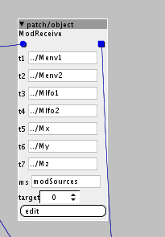

Yes one reason is because you would have a lot less inlets and outlets, which uses sram.
How to read a table two subpatch levels deep
MattilynMattroe
#22
As a quick aside, in case it's useful -
regarding poly patches: for my poly midi Looper I have a table in the parent patch and then use polyindex inside the poly subpatch to tell it where to right into the table. Like, if polyindex=0 write to offset 0, if polyindex=1 write to offset 100, or whatever. Haven't touched mpe though...
How big are the tables? If they're small I wouldn't worry about them being multiplied. Thinking about it, isn't it more or less the same? Instead of one big table in the parent patch you have lots of smaller ones in the subpatches? But then if you needed to save the table it's easier with one big one...
Ke10g
#23
thanks, I'm not sure how to use polyindex for this. How can I find this poly midi looper? is it in the community patches? I could take a look.
I am not using one big table but a bunch of smaller tables. One for each source (which manages the amounts of mod being sent to all the destinations).
Ke10g
#24
@jaffasplaffa @MattilynMattroe @thetechnobear
Thanks for pointing me in this direction... I had a go at programming my own object and it sort of works... but could use some help making it better. The first version i made, to my surprise, actually works, but still uses up a bit too much ram (i need 44 of them in my voice patch (which means this number is times 4) to link up all the modulation targets. With this version I was able to get 21 of them going. Not bad at all! Huge increase in efficiency.
The first object i made was this:

It collects the appropriate tables. The target attribute corresponds to the offset for that modulation destination, so I'll set that individually for each one. The other attributes are the tables. The mod amounts are processed from unipolar to bipolar, and then they are multiplied with the corresponding values of the modulation sources. Then these are all summed with the initial value and sent to the output.
int te1 = attr_t1.array[_USAT((attrtarget),attr_t1.LENGTHPOW)]<<attr_t1.GAIN;
int te2 = attr_t2.array[_USAT((attrtarget),attr_t2.LENGTHPOW)]<<attr_t2.GAIN;
int tl1 = attr_t3.array[_USAT((attrtarget),attr_t3.LENGTHPOW)]<<attr_t3.GAIN;
int tl2 = attr_t4.array[_USAT((attrtarget),attr_t4.LENGTHPOW)]<<attr_t4.GAIN;
int tx = attr_t5.array[_USAT((attrtarget),attr_t5.LENGTHPOW)]<<attr_t5.GAIN;
int ty = attr_t7.array[_USAT((attrtarget),attr_t6.LENGTHPOW)]<<attr_t6.GAIN;
int tz = attr_t7.array[_USAT((attrtarget),attr_t7.LENGTHPOW)]<<attr_t7.GAIN;
int bpe1 = (te1-(1<<26))<<1;
int bpe2 = (te2-(1<<26))<<1;
int bpl1 = (tl1-(1<<26))<<1;
int bpl2 = (tl2-(1<<26))<<1;
int bpx = (tx-(1<<26))<<1;
int bpy = (ty-(1<<26))<<1;
int bpz = (tz-(1<<26))<<1;
int se1 = attr_ms.array[_USAT((0),attrms.LENGTHPOW)]<<attr_ms.GAIN;
int se2 = attr_ms.array[_USAT((1),attrms.LENGTHPOW)]<<attr_ms.GAIN;
int sl1 = attr_ms.array[_USAT((2),attrms.LENGTHPOW)]<<attr_ms.GAIN;
int sl2 = attr_ms.array[_USAT((3),attrms.LENGTHPOW)]<<attr_ms.GAIN;
int sx = attr_ms.array[_USAT((4),attrms.LENGTHPOW)]<<attr_ms.GAIN;
int sy = attr_ms.array[_USAT((5),attrms.LENGTHPOW)]<<attr_ms.GAIN;
int sz = attr_ms.array[_USAT((6),attrms.LENGTHPOW)]<<attr_ms.GAIN;
int e1 = ___SMMUL(bpe1<<3,se1<<2);
int e2 = ___SMMUL(bpe2<<3,se2<<2);
int l1 = ___SMMUL(bpl1<<3,sl1<<2);
int l2 = ___SMMUL(bpl2<<3,sl2<<2);
int xt = ___SMMUL(bpx<<3,sx<<2);
int yt = ___SMMUL(bpy<<3,sy<<2);
int zt = ___SMMUL(bpz<<3,sz<<2);
outlet_total = e1 + e2 + l1 + l2 + xt + yt + zt + inlet_initial;
But obviously this is not efficient.
So I've tried to compress everything into a single equation:
outlet_total =
(__SMMUL((((attrt1.array[USAT((attr_target),attr_t1.LENGTHPOW)]<<attr_t1.GAIN)-(1<<26))<<1)<<3,(attr_ms.array[USAT((0),attr_ms.LENGTHPOW)]<<attr_ms.GAIN)<<2))+
(__SMMUL((((attrt2.array[USAT((attr_target),attr_t2.LENGTHPOW)]<<attr_t2.GAIN)-(1<<26))<<1)<<3,(attr_ms.array[USAT((1),attr_ms.LENGTHPOW)]<<attr_ms.GAIN)<<2))+
(__SMMUL((((attrt3.array[USAT((attr_target),attr_t3.LENGTHPOW)]<<attr_t3.GAIN)-(1<<26))<<1)<<3,(attr_ms.array[USAT((2),attr_ms.LENGTHPOW)]<<attr_ms.GAIN)<<2))+
(__SMMUL((((attrt4.array[USAT((attr_target),attr_t4.LENGTHPOW)]<<attr_t4.GAIN)-(1<<26))<<1)<<3,(attr_ms.array[USAT((3),attr_ms.LENGTHPOW)]<<attr_ms.GAIN)<<2))+
(__SMMUL((((attrt5.array[USAT((attr_target),attr_t5.LENGTHPOW)]<<attr_t5.GAIN)-(1<<26))<<1)<<3,(attr_ms.array[USAT((4),attr_ms.LENGTHPOW)]<<attr_ms.GAIN)<<2))+
(__SMMUL((((attrt7.array[USAT((attr_target),attr_t6.LENGTHPOW)]<<attr_t6.GAIN)-(1<<26))<<1)<<3,(attr_ms.array[USAT((5),attr_ms.LENGTHPOW)]<<attr_ms.GAIN)<<2))+
(__SMMUL((((attrt7.array[USAT((attr_target),attr_t7.LENGTHPOW)]<<attr_t7.GAIN)-(1<<26))<<1)<<3,(attr_ms.array[USAT((6),attr_ms.LENGTHPOW)]<<attr_ms.GAIN)<<2))+
inlet_initial;
This compiles but for some reason the DSP maxes out...
Any ideas?
The DSP is usually nowhere near maxing out. Is this too much for a single operation or something like that?
thetechnobear
#26
answered on your other topic here
please can I ask that next time you do not cross-post...
its unnecessary to have multiple topics, and creates noise on the forum, and it will not get you a faster response 
also, please ensure you search the forum... axoloti has been around a good amount of time, and we have helped a lot of new users, so there is a ton of good information on the forum already.